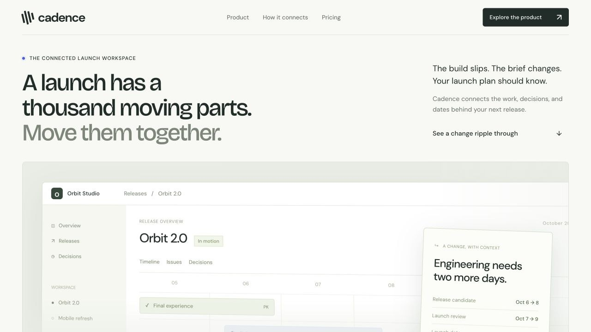
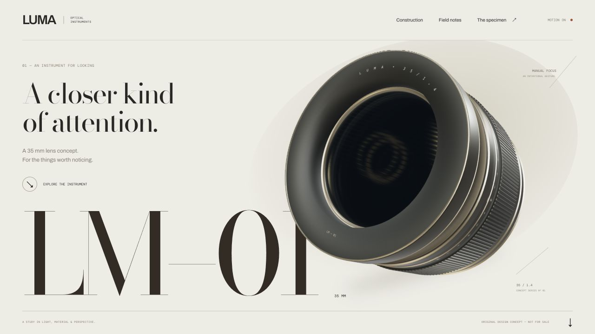

Studies in
form & function.
New: TRACE ↗ — Inspect a failed agent run. Replay with better evidence.
Three Dayform directions ↗ — Closing Time, The Working Ledger, and Room for the Work. Distinct responsive prototypes with working product demonstrations.
Previous Dayform exploration — Retained for comparison; not the selected direction.
Direct UI studies ↗ — Four independent compositions studied from Cursor, Linear, Firecrawl, and ElevenLabs.
Structural reference library ↗ — Three runnable, source-attributed layout studies with borrowable HTML, CSS, and JavaScript.
Original products and contrasting visual arguments. Open a study, try the interaction, and borrow the parts that fit your project. These are fictional examples, with original copy and illustrations.


you & light. Explore the scroll-driven optical instrument ↗
More north.Northstar ↗
Everywhere.Relay ↗
of change.Fieldwork ↗
The four studies open directly as static HTML. The integration lab needs
the development server: run bun install, then
bun run dev in this directory.